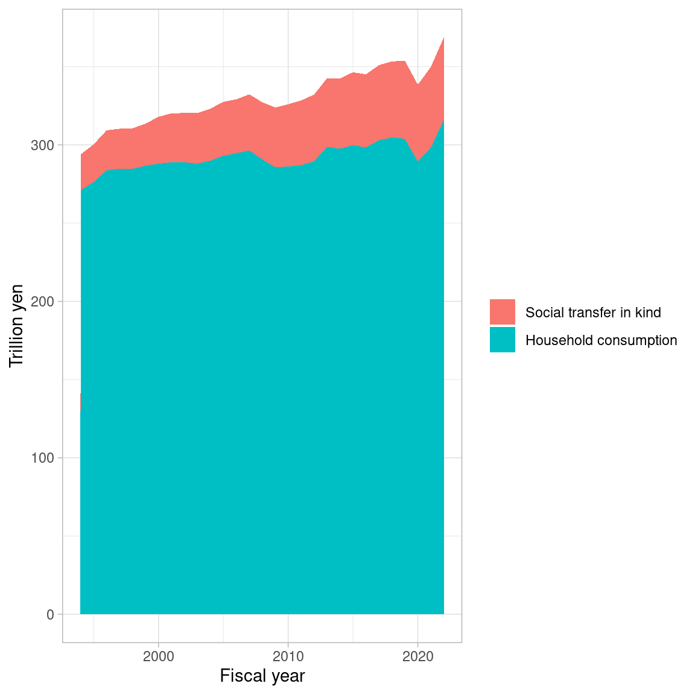

Code
library(tidyverse)
library(readxl)
theme_set(theme_light())Mitsuo Shiota
April 13, 2024
Some people say “Consumption tax rate hikes have reduced household consumption in the long-run. So, if we cut consumption tax rate, which is currently 10 precent, household consumption will grow, and higher economic growth follows.” I doubt their assertion. As the society is aging, social transfer in kind, such as public insurance payment in medicine and care, has to increase. This increase in social transfer in kind may be a confound, which increases consumption tax rates, and decreases household consumption, as social transfer in kind is included in government consumption, not household consumption under the current SNA (2008SNA).
I download the relevant data from Cabinet Office site, and put them in data folder. Values are nominal, not real.
X2022ffm1n_jp <- read_excel("data/2022ffm1n_jp.xlsx",
skip = 6)
X2022s9_jp <- read_excel("data/2022s9_jp.xlsx",
skip = 4)
consumption <- tibble(
year = names(X2022ffm1n_jp)[-1],
household = t(X2022ffm1n_jp)[,1][-1] |> unname(),
govt = t(X2022ffm1n_jp)[,11][-1] |> unname(),
social_trsf_in_kind = t(X2022s9_jp)[(1:29)*3, 39] |> unname()
) |>
mutate(across(everything(), as.numeric))Here, I add social transfer in kind to household income. I confirm social transfer in kind is increasing steadily.
consumption |>
select(-govt) |>
pivot_longer(-year) |>
mutate(
name = factor(name, levels = c("social_trsf_in_kind", "household"),
labels = c("Social transfer in kind",
"Household consumption")),
value = value / 1e3
) |>
ggplot(aes(year, value)) +
geom_area(aes(fill = name)) +
labs(x = "Fiscal year", y = "Trillion yen", fill = NULL)
---
title: Add social transfer in kind to household consumption in Japan
author: Mitsuo Shiota
date: '2024-04-13'
categories:
- economics
- R
knitr:
opts_chunk:
out.width: '70%'
---
```{r}
#| label: setup
#| message: false
library(tidyverse)
library(readxl)
theme_set(theme_light())
```
## Does consumption tax hurt household consumption?
Some people say "Consumption tax rate hikes have reduced household consumption in the long-run. So, if we cut consumption tax rate, which is currently 10 precent, household consumption will grow, and higher economic growth follows."
I doubt their assertion.
As the society is aging, social transfer in kind, such as public insurance payment in medicine and care, has to increase.
This increase in social transfer in kind may be a confound, which increases consumption tax rates, and decreases household consumption, as social transfer in kind is included in government consumption, not household consumption under the current SNA (2008SNA).
## Get the SNA data
I download the relevant data from [Cabinet Office site](https://www.esri.cao.go.jp/jp/sna/data/data_list/kakuhou/files/2022/2022_kaku_top.html), and put them in `data` folder. Values are nominal, not real.
```{r}
#| label: read_sna_data
#| warning: false
X2022ffm1n_jp <- read_excel("data/2022ffm1n_jp.xlsx",
skip = 6)
X2022s9_jp <- read_excel("data/2022s9_jp.xlsx",
skip = 4)
consumption <- tibble(
year = names(X2022ffm1n_jp)[-1],
household = t(X2022ffm1n_jp)[,1][-1] |> unname(),
govt = t(X2022ffm1n_jp)[,11][-1] |> unname(),
social_trsf_in_kind = t(X2022s9_jp)[(1:29)*3, 39] |> unname()
) |>
mutate(across(everything(), as.numeric))
```
## Plot
Here, I add social transfer in kind to household income. I confirm social transfer in kind is increasing steadily.
```{r}
#| label: chart1
#| fig-cap: Household consumption plus social transfer in kind
#| fig-align: center
#| fig-asp: 1
#| warning: false
consumption |>
select(-govt) |>
pivot_longer(-year) |>
mutate(
name = factor(name, levels = c("social_trsf_in_kind", "household"),
labels = c("Social transfer in kind",
"Household consumption")),
value = value / 1e3
) |>
ggplot(aes(year, value)) +
geom_area(aes(fill = name)) +
labs(x = "Fiscal year", y = "Trillion yen", fill = NULL)
```